피아트 Fiat
피아트(Fiat)는 이탈리아의 자동차 제조사이다. 이 회사는 1899년부터 자동차를 생산하며 이탈리아에서 가장 큰 자동차 제조사로 성장했다.
최종 업데이트

피아트는 어떤 브랜드인가
피아트는 어떻게 시작되고 성장했나
피아트 자동차의 역사는 피아트 4 HP를 생산한 1899년부터 시작되었다. 이 회사는 이탈리아에서 가장 큰 자동차 제조사로 자리매김했다.
현재의 기업 구조는 2007년 피아트 S.p.A가 자동차 사업 부문을 조정하면서 형성된 것이다. 2009년부터는 미국 크라이슬러와의 자본 제휴를 통해 사업을 확장했으며, 2014년에는 크라이슬러를 완전히 자회사로 편입하여 피아트 크라이슬러 오토모빌스를 발족했다.
피아트의 브랜드 아이덴티티는 무엇인가
피아트는 이탈리아의 오랜 자동차 제조 전통을 이어오며 다양한 종류의 차량을 생산하는 브랜드이다. 이탈리아 최대 자동차 제조사로서 역사적 중요성을 가진다.
피아트의 대표 제품과 서비스는 무엇인가
피아트는 다양한 종류의 승용차와 상용차를 생산한다. 대표적인 승용차 모델로는 500 시리즈, 판다, 시에나, 크로노스, 아르고, 티포, 124 스파이더, 모비, 500X, 펄스, 패스트백, 500L 등이 있다.
상용차로는 울리세, 피오리노, 도블로, 두카토, 스쿠도, 스토라다, 토로 등을 생산한다. 또한 전동화 모델인 500e와 두카토 일렉트릭도 제품 라인에 포함된다.
피아트는 지금 어떤 상태인가
피아트 로고는 어떻게 변해왔나
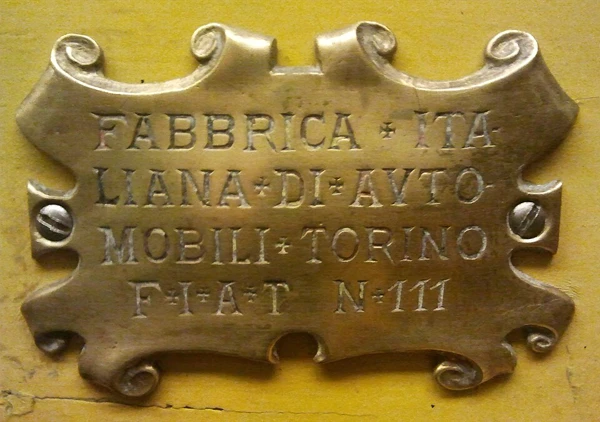
1899–1901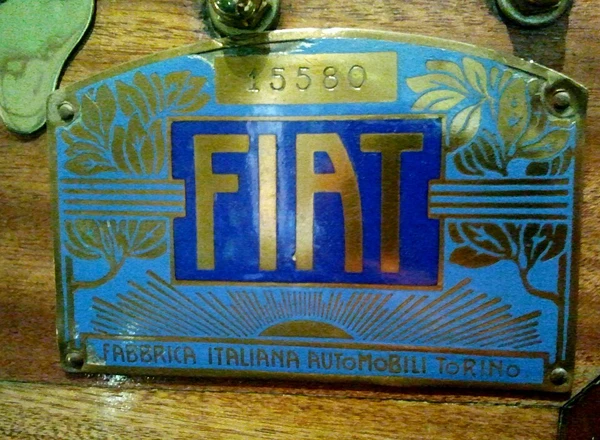
1901–1904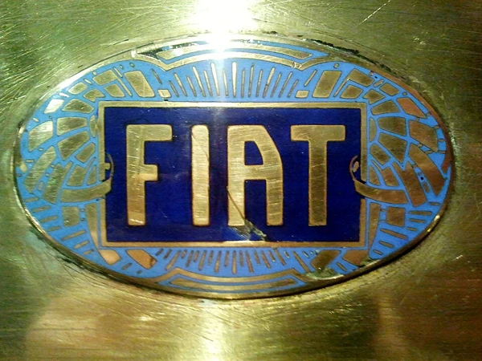
1904–1921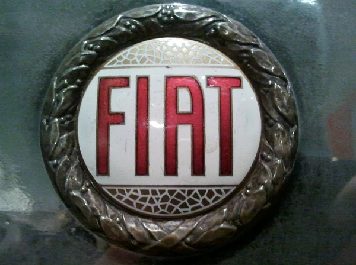
1921–1925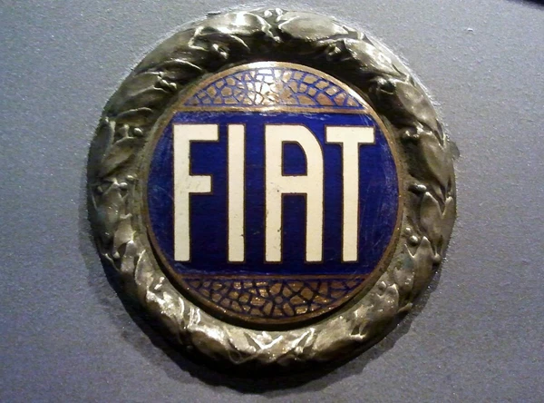
1925–1931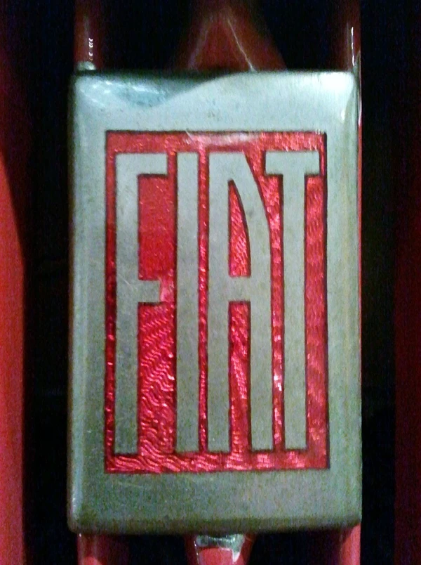
1931–1931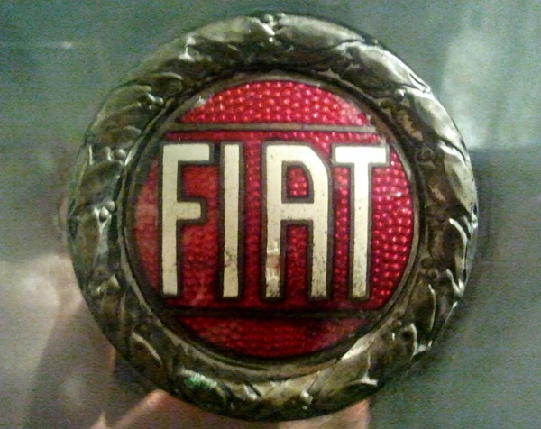
1931–1968- 1968–1999
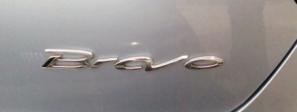
2007–2018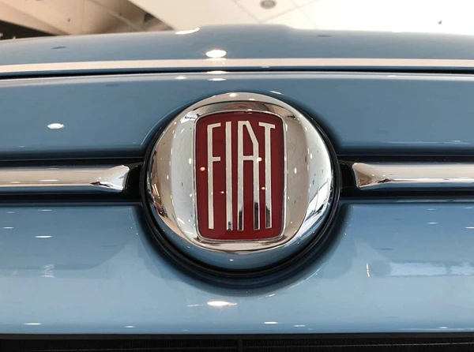
2018–2020- 2020–2022
- 2022–2025
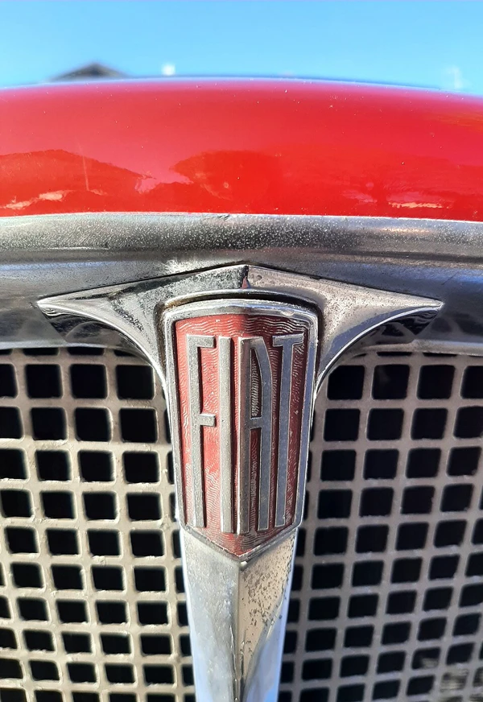
2025–현재
시기는 위키데이터 로고 기간 또는 위키미디어 커먼즈 파일 정보 기준입니다. 이미지를 누르면 원본 파일과 라이선스를 볼 수 있습니다.
사진으로 보는 피아트의 역사
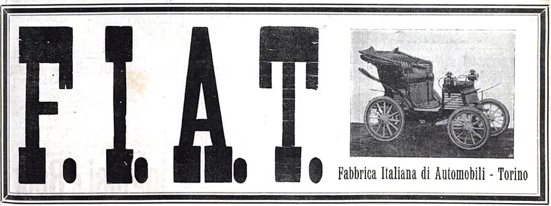
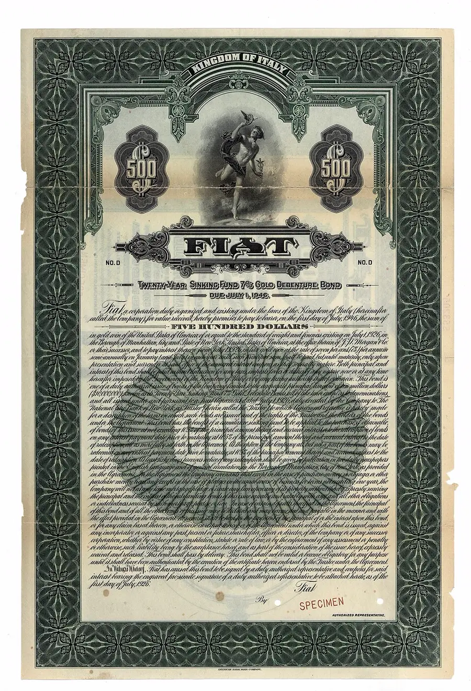
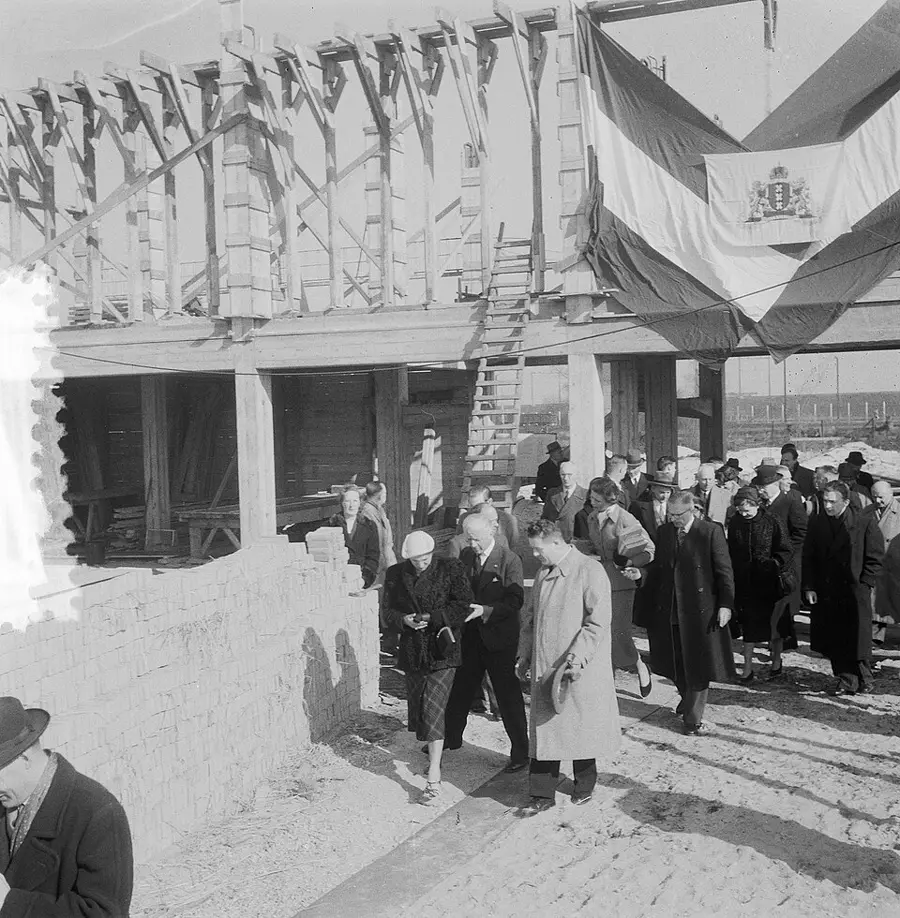
자주 묻는 질문
피아트는 어느 나라 브랜드인가요?
피아트는 이탈리아의 모빌리티 브랜드입니다.
피아트는 언제 설립되었나요?
피아트는 1899년 설립되었습니다.
피아트의 브랜드 아이덴티티는 무엇인가요?
피아트는 이탈리아의 오랜 자동차 제조 전통을 이어오며 다양한 종류의 차량을 생산하는 브랜드이다.
피아트의 대표 제품은 무엇인가요?
피아트는 다양한 종류의 승용차와 상용차를 생산한다.
피아트는 어느 기업이 소유하고 있나요?
피아트는 2021년부터 스텔란티스 산하의 스텔란티스 이탈리아에 소속된 자회사가 되었다.
피아트의 창업자는 누구인가요?
피아트의 창업자는 조반니 아녤리입니다(위키데이터 기준).
피아트의 본사는 어디에 있나요?
피아트의 본사는 토리노에 있습니다(위키데이터 기준).
출처와 검증
피아트 관련 참고: 공식 웹사이트 · 위키데이터 Q27597 · 한국어 위키백과 · 영어 위키백과. 브랜드명은 한글과 원어를 함께 표기하되 데이터에 없는 표기는 만들지 않습니다. 기원 국가·설립연도는 검수된 정의문에서 확인된 값을 우선하고, 없을 때만 공식 웹사이트 URL이 일치하는 위키데이터 개체의 값을 씁니다. 탄생일의 월·일은 위키데이터, 위키백과 정보상자, 본문 가운데 같은 연월로 확인되는 값만 싣고, 출처끼리 다르면 싣지 않습니다. 웹 첫 보관은 인터넷 아카이브가 공식 사이트 첫 화면을 처음 보관한 날로, 사이트 개설일과 다를 수 있습니다. 위키데이터 값은 2026-09-07 기준입니다.